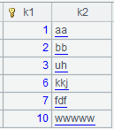
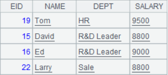

Description:
Segment an entity table or an in-memory table and return the cursor of a specified segment.
Synatax:
T.cursor(x:C,¡;wi,¡;k:n)
Note:
The function splits entity table/in-memory table T into n segments, computes data in the kth segment with expression x and the filtering condition wi, and returns the results as a cursor which contains a field named C. If T is an attached table, the queried data is allowed to include a parent table field.
Zone tables are segmented as a whole when T is a multi-zone composite table.
Options:
|
@m |
The T.cursor@m(x:C¡;wi,...;n) function with this option generates a multicursor segmented into n parts. n is an integer; the function returns an ordinary cursor if n<2; use the max number of segments set in¡¾Tool¡¿-¡¾Options¡¿if n is absent |
Parameters:
Return value:
A single-thread cursor/multicursor
Example:
|
|
A |
|
|
1 |
for 100 |
|
|
2 |
=to(10000).new(#:k1,rand():c1).sort@o(k1) |
Return a table sequence  |
|
3 |
=to(10000).new(#:k1,rand(10000):c2,rand()*1000:c3).sort@o(k1) |
Return a table sequence
|
|
4 |
=A2.cursor() |
Return a cursor |
|
5 |
=A3.cursor() |
Return a cursor |
|
6 |
=file("D:\\tb4.ctx") |
Generate a composite table file |
|
7 |
=A6.create(#k1,c1) |
Create A6¡¯s base table whose key is k1 |
|
8 |
=A7.append(A4) |
Append data of A4¡¯s cursor to A7¡¯s base table |
|
9 |
=A7.attach(table4,c2,c3) |
Create an attached table table4 for the base table |
|
10 |
=A9.append(A5) |
Append data of A5¡¯s cursor to attached table table4 |
|
11 |
=A9.cursor(;c2<1000;2:3) |
Divide records meeting c2<1000 in the attached table into 3 segments and return a cursor of all columns of the second segment |
|
12 |
=A11.fetch() |
Fetch data from A11¡¯s cursor  |
|
13 |
=A7.cursor(;c1>0.99) |
Get records meeting c1>0.99 from A7¡¯s base table |
|
14 |
=A13.fetch() |
Fetch data from A13¡¯s cursor
|
|
15 |
=A9.cursor(k1,c1:b,c3;c3>999) |
Get the base table¡¯s k1 field and c1 field from attached table table4, as well as c3 field of the attached table, according to condition c3>999, and rename c1 b |
|
16 |
=A15.fetch() |
Fetch data from A15¡¯s cursor
|
|
17 |
=A9.cursor@m(;;3) |
Use @m option to generate a multicursor from attached table table4 |
|
18 |
=create(k1,k2).record([1,"aa",2,"bb",3,"uh",6,"kkj",7,"fdf",10,"wwwww"]).keys(k1) |
Return a table sequence whose primary key is k1
|
|
19 |
=A6.open() |
Open composite table tb4.ctx |
|
20 |
=A19.cursor(;k1:A18;1:3).fetch() |
Get k1 field and c1 field from the base table according to condition that k1 is contained in corresponding k1 field in A18¡¯s table sequence
|
|
21 |
=A19.cursor(;k1:A18:null;1:3).fetch() |
Get k1 field and c1 field from the base table according to condition that k1 isn¡¯t contained in corresponding k1 field in A18¡¯s table sequence
|
|
22 |
=A19.cursor(;k1:A18:#;1:3).fetch() |
Get k1 field and c1 field from the base table according to condition k1=A18(k1)
|

 b
b